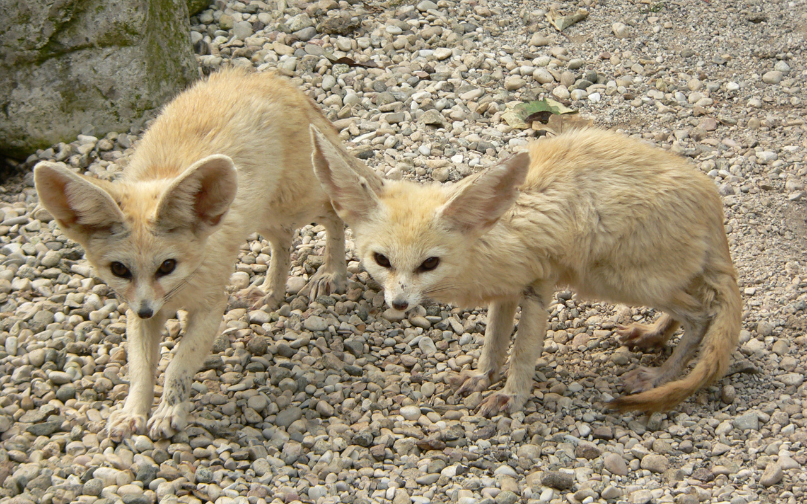

Información General
Los zorros son mamíferos omnívoros pertenecientes a la familia Canidae. Se caracterizan por tener un hocico estrecho y una cola tupida. Son animales muy adaptables y viven en hábitats diversos como bosques, praderas, montañas e incluso zonas urbanas.
Existen más de 30 especies de zorros, siendo el zorro rojo (Vulpes vulpes) la especie más común y ampliamente distribuida.
Los zorros son conocidos por su astucia y habilidades de caza, que les permiten sobrevivir en una amplia variedad de entornos.
Imágenes
Macho de zorro chilote (Lycalopex fulvipes)

Fennecus

Zorro polar o zorro ártico